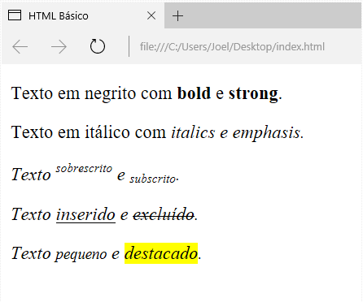

As tags de formatação de texto ajudam a destacar trechos da parte escrita da página, seja para fins de SEO ou por requisitos do conteúdo. Formatações como negrito e itálico podem ser aplicadas com facilidade utilizando as várias tags disponíveis para esse fim: b e strong para negrito/texto forte; i e em para itálico/ênfase; sup e sub para sobrescrito e subscrito, respectivamente; ins e del para indicar trechos que foram incluídos ou removidos, respectivamente; small para textos menores que o padrão; mark para texto destacado. Apesar da tag e terem resultados visualmente idênticos, eles têm usos diferentes. A tag deve ser utilizada quando quer se destacar algo que é apenas visual, como por exemplo, deixar um link com mais visível. A tag por sua vez, além de destacar o visual, dá um destaque semântico ao texto, então se o conteúdo que você quer dar destaque é uma parte relevante do texto, utilize a tag . O mesmo vale para as tags e , onde a tag é utilizada apenas para formatação visual e a tag dá ênfase semântica ao texto, não devendo ser utilizada para uso puramente estético.
Resultado:
